Graph Basics
Definition: Graph
A graph G = (V, E) consists of:
V: Non-empty set of vertices (nodes)
E: Set of edges (connections between vertices)
Basic Terminology
| Term | Definition |
|---|---|
| Adjacent | Two vertices connected by an edge |
| Incident | Edge is incident to its endpoints |
| Degree deg(v) | Number of edges incident to v |
| Isolated vertex | Vertex with degree 0 |
| Pendant/Leaf | Vertex with degree 1 |
| Loop | Edge connecting vertex to itself |
| Multiple edges | More than one edge between same vertices |
Handshaking Theorem
Sum of all degrees = twice the number of edges
Corollary: Number of odd-degree vertices is EVEN
Example
Graph has 5 vertices with degrees 2, 3, 3, 4, 4. Find |E|.
2|E| = 16
|E| = 8 edges
Types of Graphs
Simple Graph
No loops, no multiple edges
Multigraph
Multiple edges allowed, no loops
Pseudograph
Loops and multiple edges allowed
Directed Graph
Edges have direction (arcs)
Special Graphs
Complete Graphs
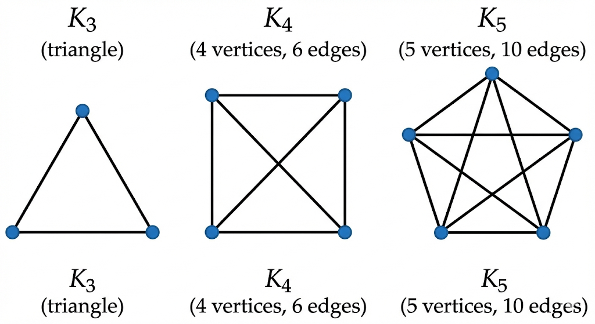Cycle Graphs (Cₙ)
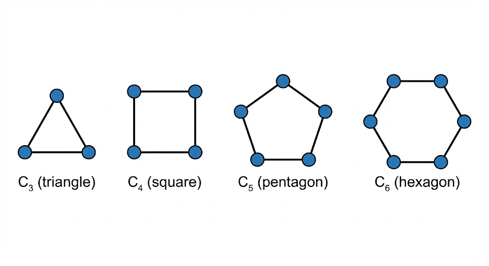Path Graphs (Pₙ)
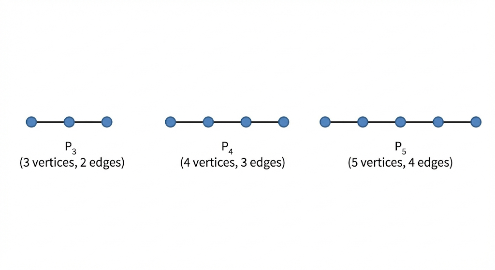Complete Bipartite Graphs (Kₘ,ₙ)
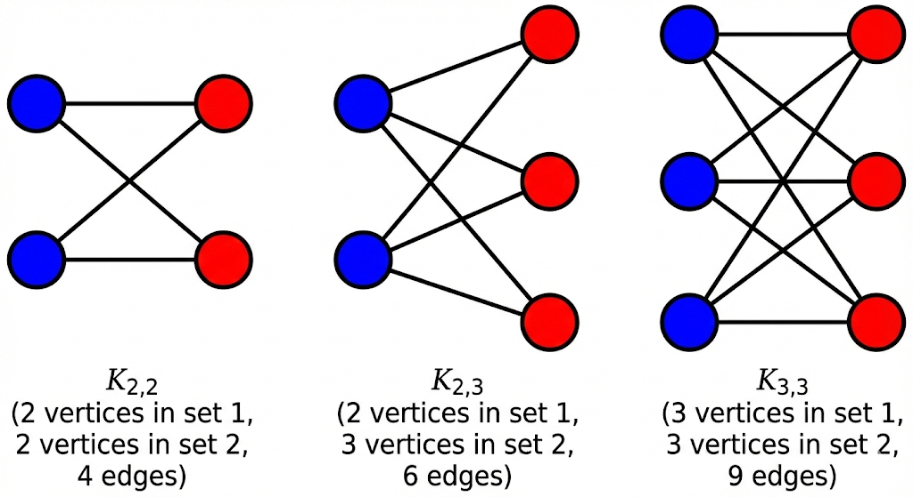Wheel Graphs (Wₙ)
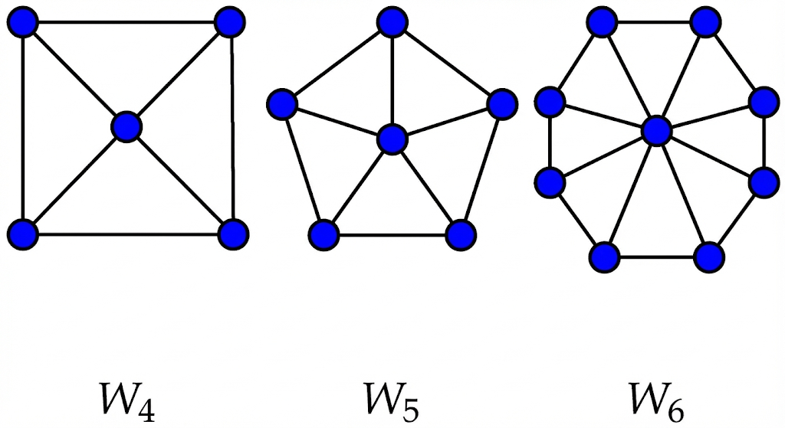Special Graph Formulas
| Graph | Vertices | Edges | Degree |
|---|---|---|---|
| Complete Kₙ | n | n(n-1)/2 | n-1 (each) |
| Cycle Cₙ | n | n | 2 (each) |
| Path Pₙ | n | n-1 | 2 (internal), 1 (ends) |
| Complete Bipartite Kₘ,ₙ | m+n | m×n | n or m |
| Wheel Wₙ | n+1 | 2n | 3 (rim), n (hub) |
Example
How many edges in K₇?
Multigraphs
Definition: Multigraph
A multigraph is a graph that allows multiple edges (parallel edges) between the same pair of vertices, but typically no loops.
A pseudograph allows both multiple edges AND loops.
Simple Graph vs Multigraph vs Pseudograph
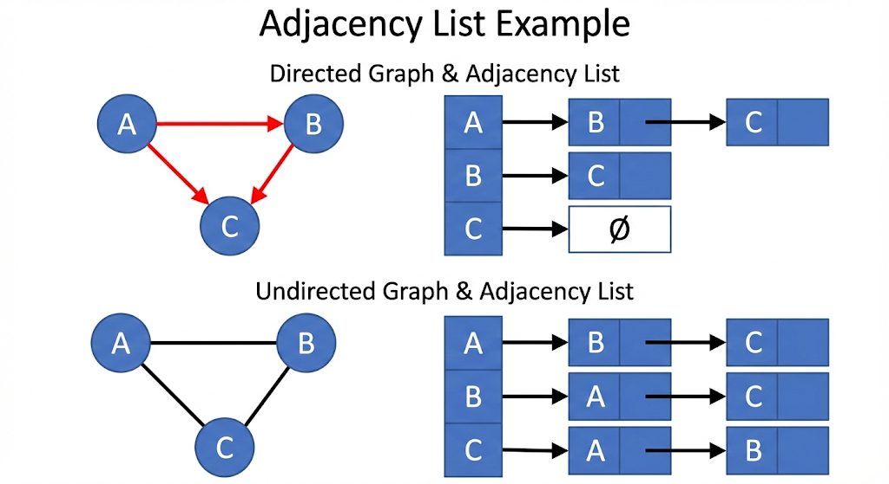| Type | Loops Allowed | Multiple Edges Allowed |
|---|---|---|
| Simple Graph | No | No |
| Multigraph | No | Yes |
| Pseudograph | Yes | Yes |
| Directed Graph | Yes (self-loops) | Yes |
Degree in Multigraphs
In multigraphs, degree counts each edge separately. If two parallel edges connect u and v, each contributes 1 to deg(u) and deg(v).
Note: A loop at vertex v contributes 2 to deg(v).
Graph Representation
Adjacency Matrix
Definition
n×n matrix A where A[i][j] = 1 if edge (i,j) exists, else 0.
Symmetric for undirected graphs.
Adjacency Matrix Example
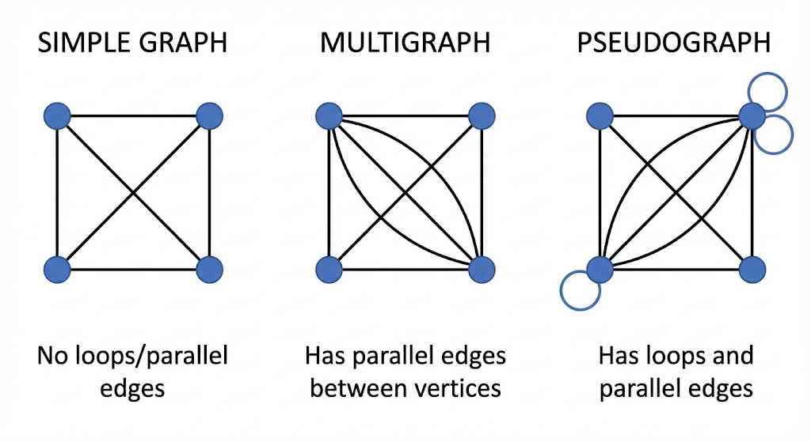Adjacency List
Definition
For each vertex, store list of adjacent vertices.
Space efficient for sparse graphs.
Adjacency List Example
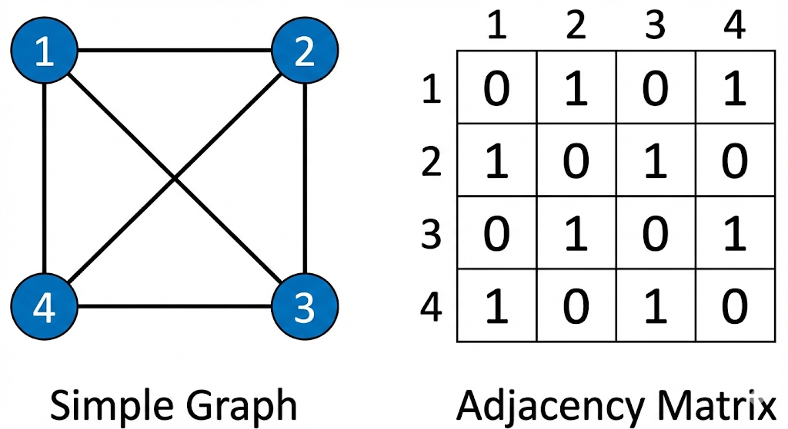Comparison
| Aspect | Adjacency Matrix | Adjacency List |
|---|---|---|
| Space | O(n²) | O(n + e) |
| Check edge | O(1) | O(degree) |
| Find neighbors | O(n) | O(degree) |
| Best for | Dense graphs | Sparse graphs |
Incidence Matrix
n×e matrix where rows are vertices, columns are edges. Entry is 1 if vertex is endpoint of edge.
Bipartite Graphs
Definition
A graph G = (V, E) is bipartite if its vertex set V can be partitioned into two disjoint sets V₁ and V₂ such that every edge connects a vertex in V₁ to a vertex in V₂.
In other words: No edges exist within V₁ or within V₂.
Bipartite Graph Example
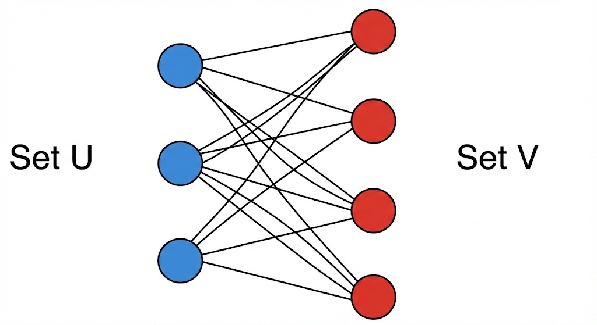Complete Bipartite Graph Kₘ,ₙ
Definition
A complete bipartite graph Kₘ,ₙ has vertex sets of sizes m and n, with EVERY vertex in one set connected to EVERY vertex in the other set.
Total Edges: m × n
Example
How many edges in K₄,₅?
Paths & Circuits
Definitions
Walk: Sequence of vertices with edges between consecutive pairs
Trail: Walk with no repeated edges
Path: Walk with no repeated vertices
Circuit: Closed trail (starts and ends at same vertex)
Cycle: Circuit with no repeated vertices (except start=end)
Euler Paths & Circuits
Definitions
Euler Path: Visits every EDGE exactly once
Euler Circuit: Euler path that returns to start
Euler Path exists ⟺ Exactly 0 or 2 vertices have ODD degree
(If 2 odd vertices: path starts at one, ends at other)
Hamiltonian Paths & Cycles
Definitions
Hamiltonian Path: Visits every VERTEX exactly once
Hamiltonian Cycle: Hamiltonian path that returns to start
Important
No simple test for Hamiltonian paths/cycles (NP-complete problem)!
Dirac's & Ore's Theorems
Ore: If n ≥ 3 and deg(u) + deg(v) ≥ n for all non-adjacent u,v, then Hamiltonian cycle exists.
Example: Euler
Does graph with degrees {2, 2, 2, 4, 4} have Euler circuit?
Yes, Euler circuit exists!
Example: Königsberg Bridges
Classic problem: 4 land masses, 7 bridges. Degrees: 3, 3, 3, 5.
For Euler path, need 0 or 2 odd vertices.
No Euler path exists!
Euler Path & Circuit Examples
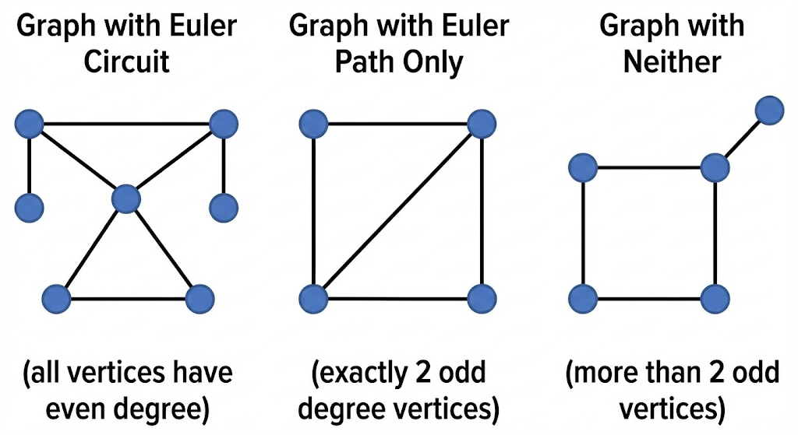Planar Graphs
Definition
A graph is planar if it can be drawn in a plane without edge crossings.
Euler's Formula
v - e + f = 2
v = vertices, e = edges, f = faces (including outer/infinite face)
Example
K₄ has 4 vertices, 6 edges. Find faces if planar.
4 - 6 + f = 2
f = 4 faces
Corollaries of Euler's Formula
e ≤ 3v - 6 (general)
e ≤ 2v - 4 (if no triangles, i.e., bipartite)
Kuratowski's Theorem
Theorem
G is planar ⟺ G contains no subdivision of K₅ or K₃,₃
Kuratowski's Forbidden Subgraphs
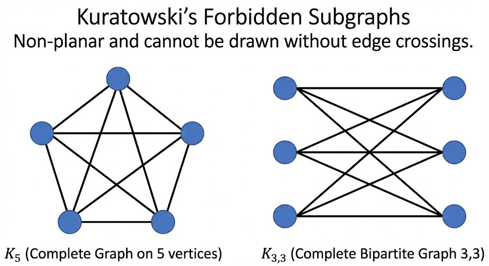K₄ is Planar
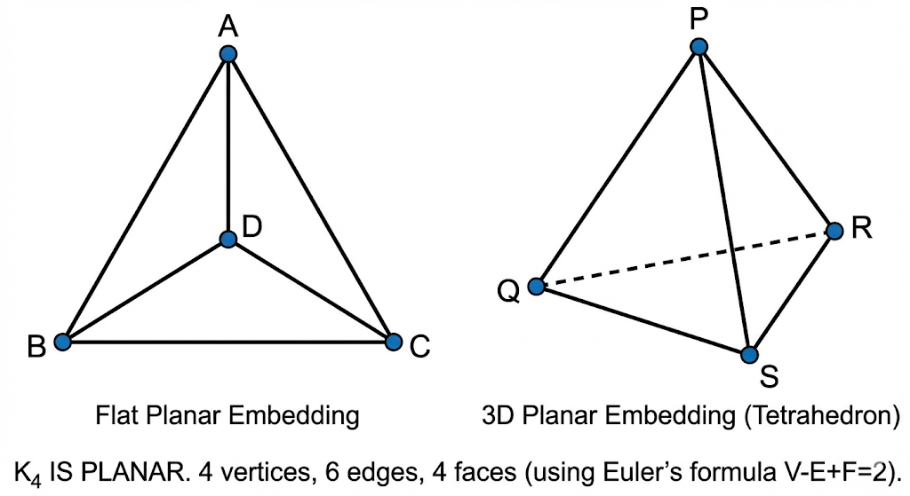Example: Test Planarity
Is K₅ planar?
Check: e ≤ 3v - 6 → 10 ≤ 3(5) - 6 = 9?
10 ≤ 9 is FALSE
K₅ is NOT planar
Graph Coloring
Definition
A proper k-coloring assigns one of k colors to each vertex such that no two adjacent vertices have the same color.
Chromatic number χ(G) = minimum k for which G has a proper k-coloring.
Graph Coloring Example
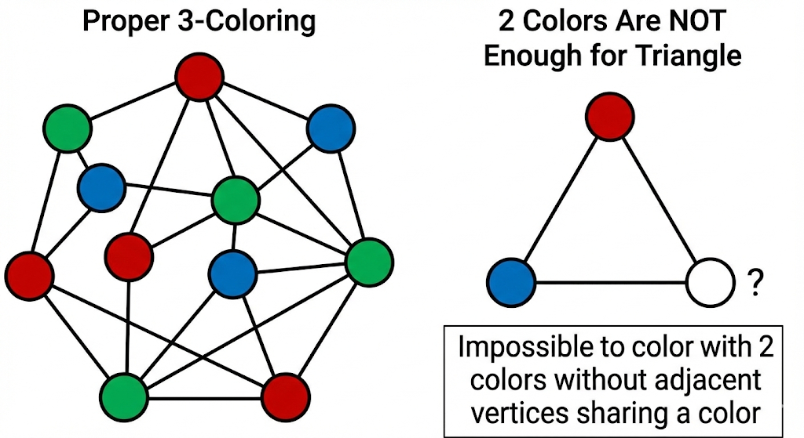Chromatic Number Bounds
Upper Bound: χ(G) ≤ Δ(G) + 1 where Δ(G) = maximum degree
Brooks' Theorem: χ(G) ≤ Δ(G) unless G is complete or odd cycle
Special Cases
| Graph Type | Chromatic Number |
|---|---|
| Complete Kₙ | χ = n |
| Cycle Cₙ (n even) | χ = 2 |
| Cycle Cₙ (n odd) | χ = 3 |
| Tree (n ≥ 2) | χ = 2 |
| Bipartite graph | χ = 2 |
| Wheel Wₙ (n even) | χ = 3 |
| Wheel Wₙ (n odd) | χ = 4 |
Four Color Theorem
Every planar graph can be colored with at most 4 colors. This means any map can be colored with 4 colors such that no adjacent regions share the same color!
Example
Find χ(K₅).
So each vertex needs a different color.
χ(K₅) = 5
Isomorphism & Homeomorphism
Graph Isomorphism
Definition
Two graphs G₁ and G₂ are isomorphic (G₁ ≅ G₂) if there exists a bijection f: V(G₁) → V(G₂) that preserves adjacency.
In other words: same structure, just different vertex labels.
• Number of vertices
• Number of edges
• Degree sequence (sorted list of all degrees)
• Number of cycles of each length
Note: These conditions are necessary but NOT sufficient!
Isomorphic Graphs Example
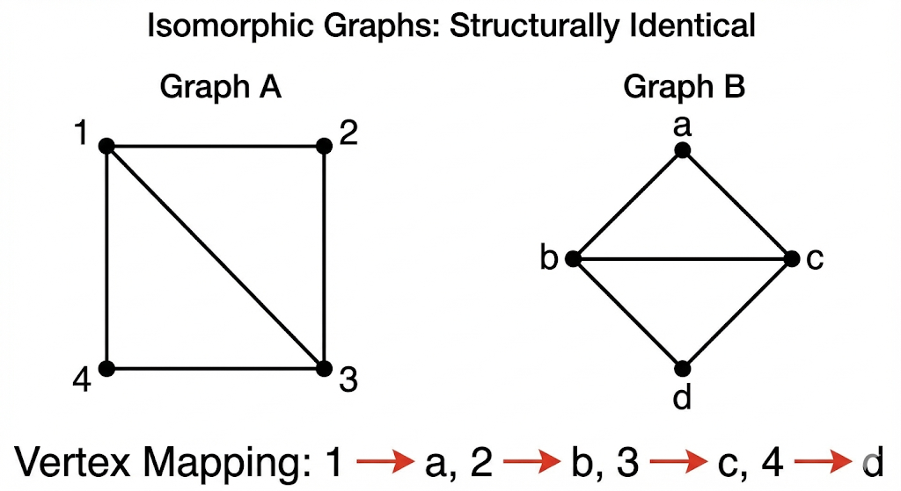Homeomorphism
Definition
Two graphs G₁ and G₂ are homeomorphic if they can be obtained from the same graph by a sequence of elementary subdivisions.
Elementary subdivision: Replacing an edge (u, v) with a path u → w → v (adding a new vertex w of degree 2).
Homeomorphic Graphs Example
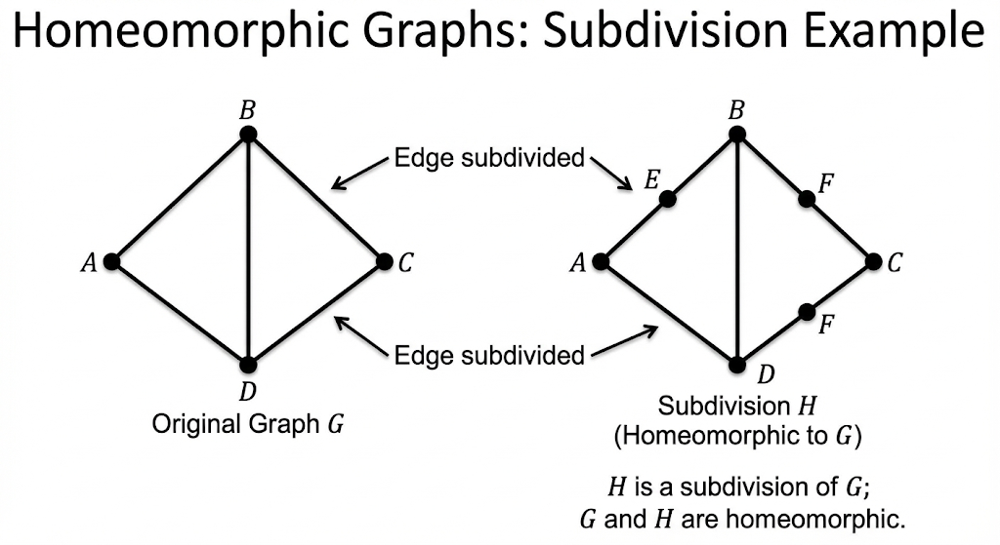Relationship to Kuratowski
Kuratowski's theorem uses homeomorphism: G is non-planar if and only if it contains a subgraph homeomorphic to K₅ or K₃,₃.
Example
Are these isomorphic? G₁: degrees {2,2,2,2}, G₂: degrees {1,2,2,3}
NOT isomorphic (quick rejection using necessary condition)
Combinatorics
Counting Principles
Sum Rule
If A and B are disjoint:
|A ∪ B| = |A| + |B|
"OR" situations
Product Rule
For independent choices:
|A × B| = |A| × |B|
"AND" situations
Permutations & Combinations
P(n, r) = n!/(n-r)! = n × (n-1) × ... × (n-r+1)
Combinations (order doesn't matter):
C(n, r) = n!/(r!(n-r)!) = P(n,r)/r!
| Scenario | Formula | Example |
|---|---|---|
| Arrange r from n (order) | P(n,r) | Podium finishes |
| Choose r from n (no order) | C(n,r) | Committee selection |
| Arrange n with repetition | nʳ | Passwords (digits 0-9) |
| Arrange with identical items | n!/(n₁!n₂!...) | Rearrange "MISSISSIPPI" |
Pigeonhole Principle
Basic Form
If n items are placed into k containers and n > k, at least one container has more than one item.
Generalized Form
If n items in k containers, at least one has ⌈n/k⌉ items.
Example: Pigeonhole
In 367 people, prove at least 2 share a birthday.
Since 367 > 366, by Pigeonhole Principle,
at least 2 people share a birthday ✓
Inclusion-Exclusion Principle
|A ∪ B ∪ C| = |A| + |B| + |C| - |A∩B| - |B∩C| - |A∩C| + |A∩B∩C|
Example
How many integers 1-100 are divisible by 2 or 3?
|B| = divisible by 3 = 33
|A ∩ B| = divisible by 6 = 16
|A ∪ B| = 50 + 33 - 16 = 67